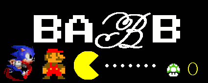

Début de l'âge d'or de l'arcade
Article détaillé : Âge d'or des jeux d'arcade.
L'industrie du jeu d'arcade entre dans un âge d'or en 1978 avec la sortie de Space Invaders de Taito. Le jeu connaît un tel succès qu'il convainc des dizaines de constructeurs de pénétrer le marché en produisant leurs propres jeux vidéo.
Les premiers jeux d'arcade à succès en couleurs apparaissent en 1979.
En 1979, Atari publie Asteroids, son plus grand succès commercial. Parmi les autres classiques de cette époque, on peut citer Lunar Lander, Night Driver, Missile Command, Berzerk, Breakout ou Battlezone.